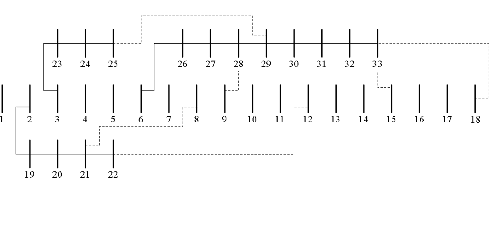
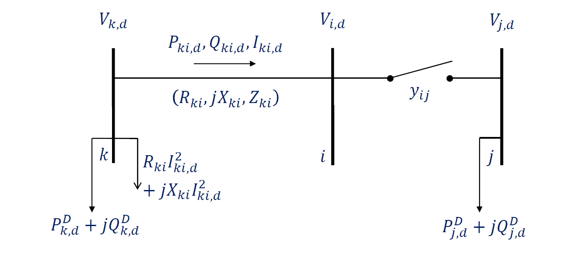

Lectura 2: Proyecto del semestre#
Resolver el problema de reconfiguración de redes de distribución de energia eléctrica (RSD)#
Introducción#
Los Sistemas de Distribución de Energia Eléctrica (SDEE) se planifican como redes malladas interconectadas.
Sin embargo, funcionan con una topología o configuración radial:
Para facilitar la coordinación de las protecciones, y
Para reducir la corriente de cortocircuito de las SDEE.
Para obtener una topología radial existen interruptores de interconexión (abiertos y/o cerrados) en puntos estratégicos del sistema.
Así, la topología inicial puede modificarse accionando los interruptores para transferir las demandas entre los distintos alimentadores.
La nueva topología tiene otro punto de operación y debe seguir siendo radial.
El problema de reconfiguración del sistema de distribución (DSR) consiste en abrir y/o cerrar interruptores con el objetivo de mejorar un índice de rendimiento.
La reconfiguración óptima es una herramienta importante para aumentar la fiabilidad de los SDEE:
especialmente cuando la automatización avanzada y las tecnologías de redes inteligentes adquieren mayor importancia y se vuelven más accesibles para los servicios públicos de distribución.

Modelo matemático General#
Variables de control (continuas y/o enteras):
estado de funcionamiento de los interruptores de interconexión (abierto o cerrado).
Función objetivo:
minimizar las pérdidas de potencia activa;
minimizar la desviación de la magnitud de tensión; o
Aislar los fallos.
Matemáticamente, el problema RSD es un problema programación no lineal entero mixto (PNLEM).
El tamaño del problema de reconfiguración está directamente asociado al número de interruptores de interconexión (IC) presentes en el sistema.
Si un sistema tiene \(C\) conmutadores, el número de topologías posibles para el sistema es del orden de \(2C\).
La mayoría de estas topologías no son prácticas, porque no satisfacen la restricción de radialidad o tienen nodos desconectados.

Arriba se encuentra un modelo de operación de las llaves de interconexión entre los nodos \(i\) y \(j\)
La variable entera \(y_{ij}\) representa el estado de operación de la llave de interconexión entre los nodos \(i\) y \(j\).
\(y_{ij} = 1\) si la llave de interconexión entre los nodos \(i\) y \(j\) está abierta
\(y_{ij} = 0\) si la llave de interconexión entre los nodos \(i\) y \(j\) está cerrada
La variable continua \(P_{ij}\) representa el flujo de potencia activa entre los nodos \(i\) y \(j\).
La variable continua \(Q_{ij}\) representa el flujo de potencia reactiva entre los nodos \(i\) y \(j\).
La variable continua \(P_{ij}\) representa el flujo de corriente entre los nodos \(i\) y \(j\).
La variable continua \(V_{i}\) representa el voltaje en el nodo \(i\).
Los parametros \(P_{i}^{D}\) y \(Q_{i}^{D}\) representan la demanda de potencia activa y reactiva en el nodo \(i\).
Los parametros \(R_{ij}\) y \(X_{ij}\) representan la resistencia y reactancia de la linea entre los nodos \(i\) y \(j\).
Modelo Matemático inicial#
Objetivo: minimizar el costo de las pérdidas de potencia activa en el sistema.
Restricciones: equilibrio de potencia activa y reactiva, límite de magnitud de tensión, límite de corriente en los circuitos, funcionamiento radial del SDE. $\( \sum\limits_{ki \in {B}} {{P_{ki,t}}} - \sum\limits_{ij \in {B}} {\left( {{P_{ij,t}} + {R_{ij}}I_{ij,t}^{sqr}} \right)} + P_{i,t}^S = P_{i,t}^D;\forall i \in {N}, \forall t \in {T} \)$
Variables: estado de funcionamiento de los interruptores de interconexión.
Restricción de radialidad#
La representación de un SDEE se realiza mediante nodos y circuitos.
Analizando la teoría de grafos, un SDEE puede considerarse como un grafo formado por , arcos y - nodos.
Desde la teoría de grafos, un árbol es un grafo conexo sin ciclos, por lo que es posible comparar la topología radial de un SDEE con un árbol.
Como se muestra en (M. S. Bazaraa, 1990), el árbol de un grafo es un subgrafo conexo con \((m - 1)\) arcos.
Así, se puede decir que la topología de un SDEE con \(N\) nodos es radial si satisface las dos condiciones siguientes:
Condición 1: la solución debe presentar \((N - 1)\) circuitos.
Condición 2: la solución debe generar una topología conexa.
Obsérvese que las restricciones de radialidad deben estar formadas por la Condición 1 y la Condición 2.
Sólo la condición 1 no garantiza la radialidad del SDEE.
** Consecuencia en el problema de reconfiguración**
El problema RSD cumple las siguientes características:
En el SDEE sólo existe una única subestación (nodo subestación) ;
Todos los demás nodos son nodos de carga;
Debe cumplirse la primera ley de Kirchhoff, y
el objetivo es encontrar la mejor topología radial.
La condición 1 se cumple mediante la siguiente restricción:
Una solución que satisfaga la restricción de equilibrio de potencia (primera ley de Kirchhoff) tiene que proporcionar la potencia demandada en cada nodo de carga.
Por tanto, existe un camino entre la subestación y los nodos de carga. Por lo tanto, cada nodo está conectado con la subestación, formando un grafo conectado, lo que demuestra la condición 2.
Así, cuando las restricciones de equilibrio de potencia se combinan con la condición 1, cada nodo de carga está conectado por un único camino con la subestación, es decir, el SDEE está conectado, sin mallas.
Generalización de la restricción de radialidad#
Más de una subestación:
Este caso aparece con frecuencia en diversos problemas de optimización de SDEE.
Por lo tanto, la condición 1 debe modificarse por:
En el que \(|N_{sub}|\) es el numero total de subestaciones en el SDEE.
La restricción anterior más las restricciones de equilibrio de potencia garantizan que deben construirse circuitos \(|N|- |N_{sub}|\) para alimentar los nodos de carga \(|N|- |N_{sub}|\) y que deben construirse \(|N_{sub}|\) topologias radiales en la solución final.
Nodos de transferencia:
Un nodo de transferencia es simplemente un nodo sin generación ni demanda.
Los nodos de transferencia no son tan frecuentes en un SDEE, se utilizan para conectar un nodo de carga con otros nodos de carga.
Un nodo de transferencia no es un nodo terminal (ésta es la condición principal sobre el uso de nodos de transferencia); por lo tanto, hay al menos dos circuitos más que “salen” del nodo de transferencia.
Por otro lado, si se sabe que todos los nodos de transferencia forman parte de la topología radial SDEE, un método sencillo consiste en suponer un valor de carga pequeño (por ejemplo, 0,001 kW) en todos los nodos de transferencia para garantizar que todos los nodos están conectados.